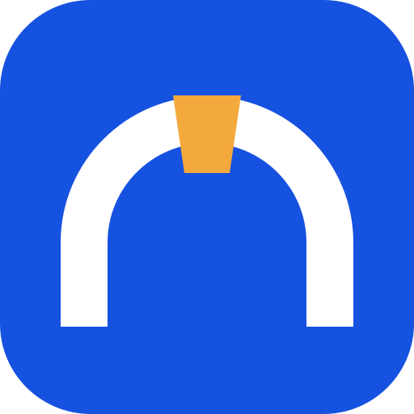
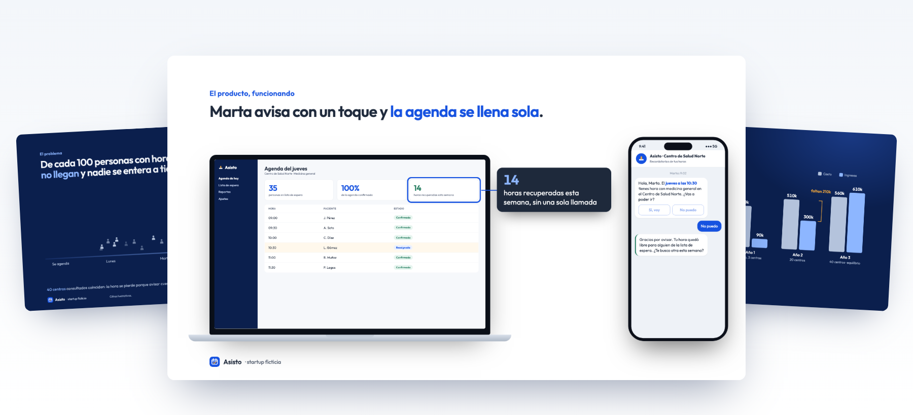
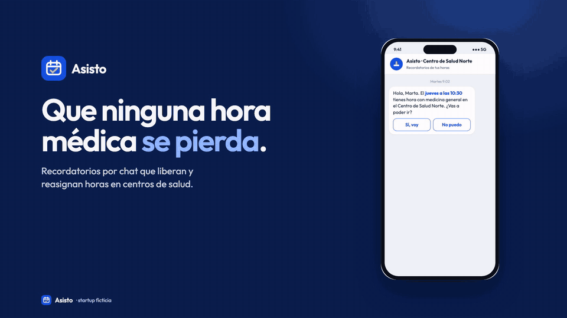

keystone-deck
Presentations that say what you mean, the way you mean it.
A Claude Code plugin that turns your argument, your numbers and your brand into a live deck with motion, and exports it to PowerPoint.

Why
Slide tools decide what you can say. You pick a template, then bend the story to fit its boxes: a bullet list where a person should be, a stock chart where your numbers should move, an animation menu instead of the moment you need to show.
keystone-deck turns it around. You describe the argument; Claude writes the talk, checks every figure, and composes each slide as a scene built for that point: the people who drop out, the product running in someone's hands, the gap in the projection. The result runs in a browser, opens in PowerPoint, and wears your brand.

The product slide of the example pitch: the phone and the laptop are a live mock, driven click by click.
What you get
- A talk before slides.
talk.mdholds the audience, the one-sentence thread and what you say on each slide. Every slide answers the question the previous one left open. - Numbers you can defend. Figures live in an evidence ledger with a tier (verified, own data, assumption, target) and a source. Slides reference them; nothing is typed by hand.
- Scenes, not templates. Fifteen scenes for high-impact decks: a person on a concrete day, a population that drops out, problem and solution in mirror, the product working in devices, competition on two axes, the market as the payer's budget, traction, projections with the gap labelled, the ask with use of funds. When none fits, Claude composes the slide.
- Your brand, everywhere. One
brand.json(W3C design tokens), checked for contrast, drives the live deck, the PowerPoint and the figures. - PowerPoint that keeps the motion. Each scene is recorded to video and placed in PowerPoint with the titles as native, editable text and the speaker notes from your talk. People who never touch HTML just open it and present.
Install
In Claude Code:
/plugin marketplace add fsotosa-ops/keystone-deck
/plugin install keystone@keystone-deck
/plugin install keystone-html@keystone-deck
/plugin install keystone-pptx@keystone-deck
| Plugin | What it adds | Needs |
|---|---|---|
keystone |
The method: narrative, evidence, visual grammar, brand kit, checks | Python 3.10+ |
keystone-html |
The stage engine and its scenes | Python, Chrome |
keystone-pptx |
PowerPoint export with motion | Python, Chrome; python-pptx, playwright, imageio-ffmpeg via uv run --with … |
Quickstart
/keystone:new my-pitch # Claude asks who decides and what, then proposes the slide sequence
/keystone:brand path/to/guide.pdf # or a website, or preset:ocean
/keystone:review my-pitch # every check, plus an independent critic
Then ask: "build it as a live deck" or "export it to PowerPoint".
Presentation types
Pick the type and the method adapts its order and rules:
| Type | Order |
|---|---|
| Pitch | person → problem with your own evidence → solution in mirror → product in context → why now → competition → model → market → traction → numbers → team → ask |
| Keynote | a lived moment → the tension → the turn → three ideas with a story each → what to do on Monday → the line people repeat |
| Class | intuition → worked example with numbers → formal version → check question → traps |
| Report | the decision needed → what changed → evidence → options → recommendation → next steps |
How it works
talk.md evidence.json brand.json
(argument) (figures) (design tokens)
└───────────── keystone check ─────────────┘
│
deck.json → scenes
│
┌────────────────┴────────────────┐
live deck (browser) PowerPoint (.pptx)
steps · presenter view · product video per scene · native text · notes
Three contracts keep content, evidence and brand apart, so you can change the brand or the output without rewriting the story. Details in docs/ARCHITECTURE.md.
Example
examples/pitch-asisto is a complete 14-slide investor pitch for a fictitious startup: the talk, the ledger, the slides, a mock product with a phone and a clinic dashboard, and the click scripts. Build it, present it, export it:
python3 plugins/keystone-html/scripts/build_stage.py examples/pitch-asisto
python3 -m http.server 8770 --directory examples/pitch-asisto/build # open /stage/
uv run --with playwright --with python-pptx --with imageio-ffmpeg \
python plugins/keystone-pptx/scripts/build_pptx.py examples/pitch-asistoFAQ
Does it work in claude.ai? The method does: skills and commands load in claude.ai when you add the plugin from Customize › Plugins. Building decks runs local scripts and a browser, so the engines need Claude Code.
Do I need to know code? No. You talk to Claude; it writes the files. The output is a link to open in a browser and a .pptx to present.
Can I edit the PowerPoint? Titles, text and notes are native and editable. The animated part of each slide is a video; to change it, ask Claude and export again.
Is my data sent anywhere? The plugins run locally. Fonts load from Google Fonts; nothing else leaves your machine unless you opt into an integration.
Contributing
Issues and pull requests are welcome; see CONTRIBUTING.md. New scenes keep the three contracts intact and come with a rendered example.
License
MIT · Built by Felipe Soto Santibáñez.